Glossary
- Local government area (LGA)
- Nigeria’s third tier of government, below the federation and the 36 states. There are 774. Boundaries come from geoBoundaries.
- City
- A fixed group of LGAs: all twenty in Lagos State; sixteen in Kano; eleven in Ibadan; four in Kaduna; five in Greater Onitsha. The outline is the same in every year.
- Centre
- One founding place per city: Iga Idunganran, the Oba’s palace on Lagos Island; Gidan Rumfa, the Emir’s palace in Kano; Mapo Hill in Ibadan; Lugard Hall in Kaduna’s 1913 government district; and Ime-Obi Ogboza, the old palace ground of the Obi of Onitsha.
- Ring
- A band 100 metres wide around the centre. People are counted ring by ring, with distance measured on the ground.
- Remoteness, r
- Distance from the centre in kilometres, times 1,000, divided by the square root of the city’s 2020 population. It lets a ring in Lagos and a ring in Onitsha be compared. A bigger city has a wider central zone.
- Zones
- Central (r below 3), intermediate (3 to 5), distant (5 to 9.3) and peri-urban (above 9.3), the anchor paper’s cut-offs. Lagos’s central zone reaches 10.1 km from Lagos Island; Onitsha’s reaches 4.3 km.
- Central share
- People in the central zone divided by people in the whole city, in the same year. A change in the share is reported in percentage points (points).
- Spread factor, φ
- How much farther from the centre the typical resident lives in a later year. It is the slope of one year’s distance percentiles against another’s. A φ of 1.05 means the typical resident lives 5% farther out; 0.95, 5% closer in. The anchor calls it the expansion factor.
- Expected spread
- The φ that a city of the same growth would have if it behaved like the average of Nigeria’s 183 GHSL urban centres, from the anchor’s model fitted to those cities on the same grid.
- National panel
- The 183 GHSL urban centres in Nigeria that were already urban by 1990, each inside its own 2025 GHSL outline. Used here as the yardstick, not as the study.
- GHS-POP
- The Global Human Settlement Layer population grid, release R2023A, at 100 metres. It takes census totals for administrative areas and spreads them over built-up volume seen by satellite. It is a model, not a count.
- WorldPop
- A second population grid at about 100 metres, made for each year from 2000 to 2020 with a random forest on roads, lights, land cover and settlement maps, adjusted to United Nations totals.
Every share in the results is a share of people, not of land. All numbers are GHS-POP, 1990 to 2020, unless WorldPop or Mexico is named.
1. Introduction
The centre of a city is where it began, and for a long time it is where most of its people lived. Then the edge became cheaper, the roads went out, the old houses became shops, and the centre stopped holding the people it used to hold. That is the story of the American city after the war, of many European cores, and, according to a careful recent study, of Mexico. Yeats put it in a line Achebe borrowed for a Nigerian novel: the centre cannot hold.
Peraza-Mues, Resendiz, Figueroa-Soriano, Prieto-Curiel and Ponce-Lopez (2025) took the Mexican census at block level for 1990, 2000, 2010 and 2020, drew rings 100 metres wide around the historic founding point of 69 cities, and counted. The central zones lost 2.5 million residents in thirty years. The share of urban Mexicans living centrally fell from over 40% to 22%. Their model of how cities stretch, ln φ = β ln(growth) + α Δt, found β = 0.60 and α = 0.0057: distances to the centre ended 28% longer than in a city that had grown at constant density.
This paper adapts that study to Nigeria’s five largest cities. They are Lagos, Kano, Ibadan, Kaduna and Onitsha, each drawn as the local government areas that make it up and each measured from its founding place. Between them they held 25 million people in 2020. Nigeria is a harder place to ask the question than Mexico. Its cities grew faster, its last census was in 2006, and the one before was in 1991. There is no block-level count for any of the four years. What exists is a set of global population grids that start from census totals and spread people over what satellites see. So the paper asks two things at once. Did the centres of Nigeria’s largest cities hold less of their people in 2020 than in 1990? And which parts of that answer can a satellite-based grid be trusted to give?
2. Statement of the problem
The sentence that fails in Nigeria is “the centre is emptying”. It might be true. Lagos Island has become a place of offices and markets, Kano’s walled city has been rebuilt shop by shop, and Onitsha’s waterfront is one of the largest markets in West Africa. But nobody has counted the people in those places on the same ground in 1990 and 2020, and a grid that puts people where buildings are cannot see a house become a warehouse. It will keep the people in the building.
That makes the measurement problem part of the finding. If the anchor’s method is run on GHS-POP and the centre gains people, the gain could be the city or it could be the grid. Two comparisons are needed to tell them apart. One is the same steps on the same grid in a country where the census already says what happened. The other is the same grid on many Nigerian cities, so that each of the five can be read against its neighbours rather than against a number nobody has.
The questions this paper can answer are therefore narrower than “did the centres empty”:
- How did the share of people in each remoteness zone change between 1990 and 2020 in Lagos, Kano, Ibadan, Kaduna and Onitsha?
- Did each city spread outward as much as the rest of urban Nigeria, on the same grid, says a city of its growth should?
- When the same steps are run on Mexico, does GHS-POP reproduce the census loss, and does a second grid agree with the first city by city?
3. Justification
Why this study. Where people live relative to the centre decides the length of the commute, the reach of the old markets and the pressure on the edge, where land is cheap and services are thin. Nigerian planning documents often assume either a crowded core or an exploding fringe. Neither has been measured on a common footing in the country’s largest cities.
Why these places. The five are the largest Nigerian cities by people in 2020 when each is drawn by its own LGAs. Every centre that GHSL put over a million people was ranked this way. Lagos (11.3 million), Kano (6.2 million) and Ibadan (3.7 million) lead clearly. Kaduna (2.09 million) and Onitsha (2.05 million) come next, with Port Harcourt (1.96 million) close behind in sixth. They also differ in the ways that matter here: a lagoon port and megacity; a walled Hausa city around an emir’s palace; an old Yoruba war camp spread across its hills; a colonial capital laid out in 1913; and a river-market town on the Niger.
Why this design. The anchor needs one centre per city, a fixed outline, and the same population source in every year. LGAs are the units that plan, tax and build roads, and a policy finding is only useful if it can be read in them. They are held fixed for every year, as the anchor holds its 2020 urban cluster fixed. GHS-POP is the only grid that covers 1990 to 2020 at 100 metres on one method. WorldPop starts in 2000 and is used as a check. The 183 older GHSL cities give each of the five a yardstick on the same grid. Mexico is run through the same pipeline because the anchor’s census numbers are the only answer available for how GHS-POP behaves at a city’s centre.
What it is entitled to claim. A difference between a city and the national yardstick, both on GHS-POP, is a defensible reading of where growth went relative to other Nigerian cities. A fall in the central share is defensible in direction, and the Mexican test says it is more likely too small than too large. A gain or loss of people at the centre, in absolute terms, is not defensible, because the Mexican test shows GHS-POP cannot see such a loss (Section 6.5). This paper does not claim one.
4. Study area
The five cities lie across the country (Figures 1a to 1e, on the landscape pages at the end of Section 5): Lagos on the south-west coast, Ibadan 120 kilometres inland from it, Onitsha on the east bank of the Niger, Kaduna in the middle belt, and Kano in the far north. Together they held 12.3 million people inside their LGAs in 1990 and 25.4 million in 2020.
Lagos is all twenty LGAs of Lagos State, 3,576 square kilometres, from Badagry on the Benin border to Epe and the Lekki peninsula in the east, with Ikorodu across the lagoon. It had 5.8 million people in 1990 and 11.3 million in 2020. The outline stops at the state line, so the northern suburbs that spill into Ogun State, at Ifo, Ota and Mowe, are outside it. The centre is Iga Idunganran, the Oba’s palace on Lagos Island (Figure 1a).
Kano is the eight metropolitan LGAs (Dala, Fagge, Gwale, Kano Municipal, Kumbotso, Nassarawa, Tarauni and Ungogo) and the eight that border them, 3,249 square kilometres. The metropolitan eight stop about 17 kilometres from the palace, short of the city’s outer zones, so the ring around them is included. Kano had 2.9 million people in 1990 and 6.2 million in 2020. The centre is Gidan Rumfa, the Emir’s palace, inside the old walls (Figure 1b).
Ibadan is all eleven LGAs of the metropolitan area, 2,893 square kilometres: the five city LGAs named Ibadan and the six around them (Akinyele, Egbeda, Ido, Lagelu, Oluyole and Ona Ara), into which the city has grown. It had 1.7 million people in 1990 and 3.7 million in 2020. The centre is Mapo Hill, above the old market at Oja’ba (Figure 1c).
Kaduna is its four metropolitan LGAs, 7,854 square kilometres, the largest outline and the emptiest. Kaduna North and Kaduna South are the city of 1913 on either side of the Kaduna River. Chikun and Igabi hold the newer districts, Narayi and Sabon Tasha to the south and Rigasa to the west, and a great deal of farmland. Kaduna had 1.1 million people in 1990 and 2.1 million in 2020. The centre is Lugard Hall, in Lord Lugard’s government district (Figure 1d).
Onitsha is the five LGAs of the built-up Greater Onitsha in UN-Habitat’s structure plan: Onitsha North, Onitsha South, Idemili North, Ogbaru and Oyi, 814 square kilometres. Ogbaru runs south along the Niger as a long arm of creeks and farmland. Onitsha had 0.9 million people in 1990 and 2.0 million in 2020. Asaba, across the river in Delta State, is not in it. The centre is Ime-Obi Ogboza, the old palace ground of the Obi of Onitsha, near the waterfront (Figure 1e).
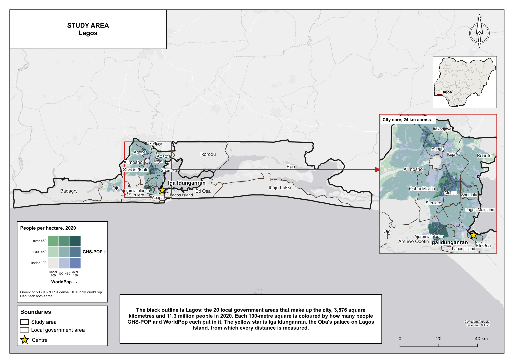
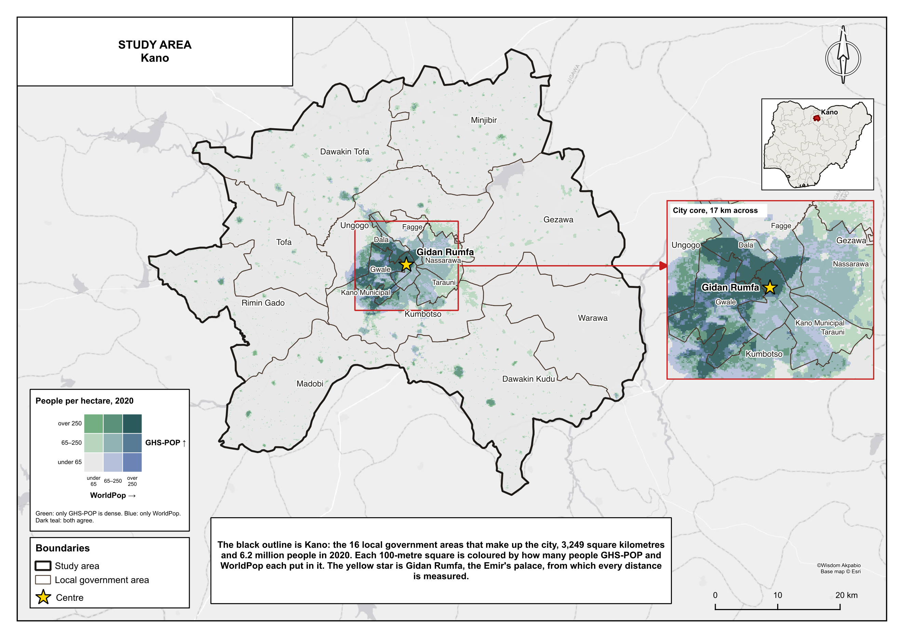
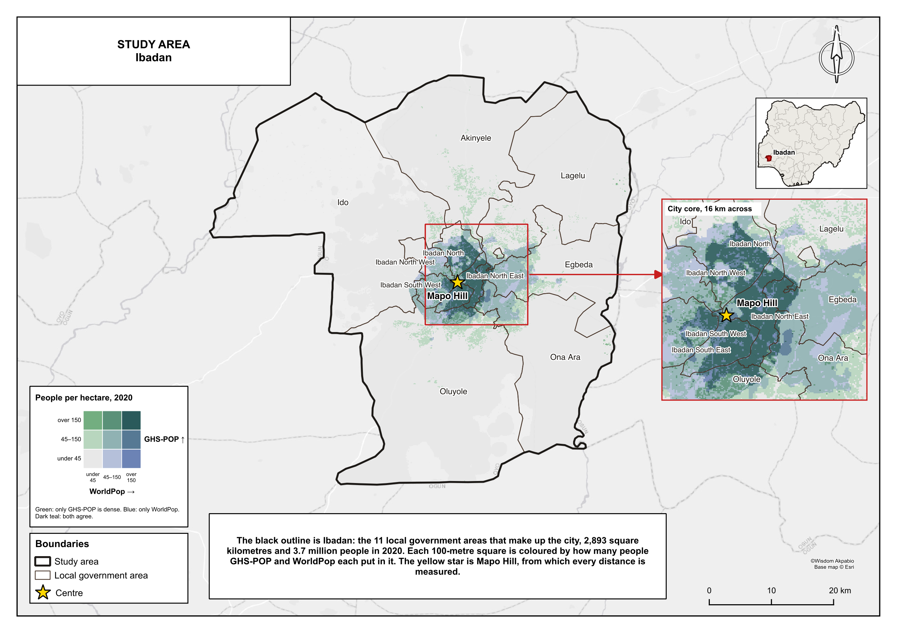
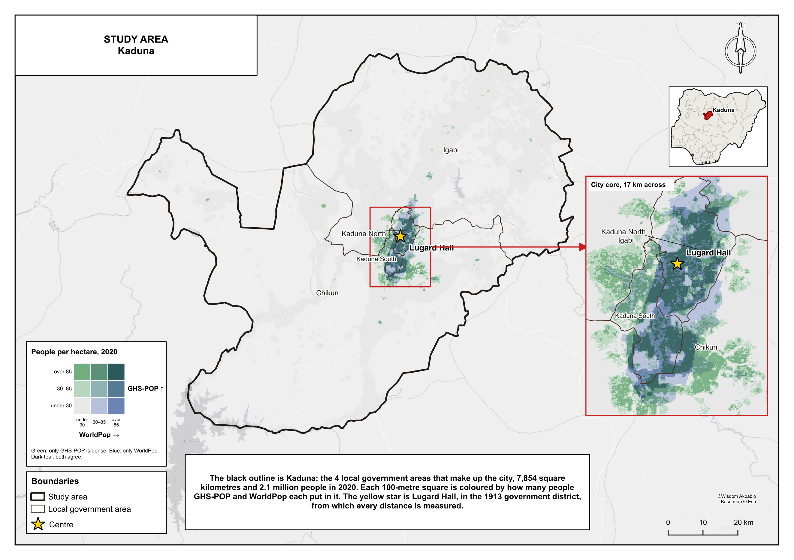
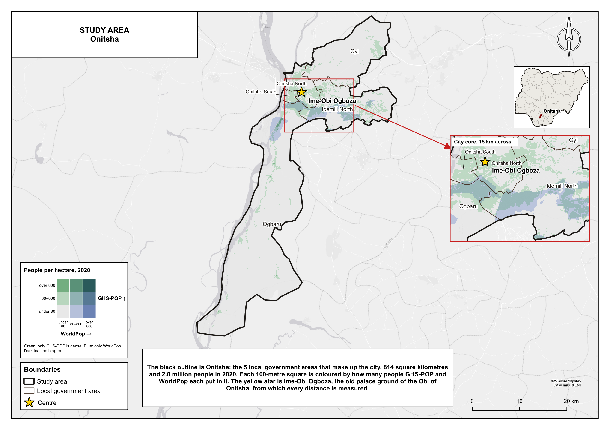
5. Data and methods
Figure 2, on the landscape page at the end of this section, is the whole method on one plate. Read it left to right. Four sources make one outline, one centre and one set of 100 metre rings for each city. The rings make the zones and the spread factor. The national panel and Mexico are run through the same steps as yardsticks.
5.1 Outlines and people
Outlines are geoBoundaries’ second-level units for Nigeria (Runfola et al., 2020), the 774 LGAs, joined to their states so that LGAs with the same name in different states (Nassarawa and Ifelodun among them) resolve correctly. Each city is the union of its LGAs.
People are GHS-POP R2023A (Schiavina et al., 2023) for the epochs 1990, 2000, 2010 and 2020, read from Google Earth Engine on the grid’s native 100 metre Mollweide cells. WorldPop’s unconstrained 100 metre grids for Nigeria in 2000, 2010 and 2020 (Tatem, 2017) are resampled to the same cells as a density, so that each 100 metre square receives its share of the people in the coarser WorldPop cell. Each city is read with a 2 kilometre margin and then cut to its outline.
The national panel uses the GHSL Urban Centre Database, release R2024A version 1.2 (European Commission, 2024): the 183 Nigerian urban centres whose GHSL year of birth is 1990 or earlier, each inside its own 2025 outline, with a centre at the densest point of 1975 built-up surface (Pesaresi and Politis, 2023) where no founding place is known.
5.2 One centre per city
The anchor uses the historic founding point, usually the main square. All five cities have one, and each was checked on a street map. Lagos’s is Iga Idunganran, on Lagos Island. Kano’s is Gidan Rumfa, the palace at the heart of the walled city. Ibadan’s is Mapo Hill, where the colonial hall stands over the old town. Kaduna’s is Lugard Hall, in the government district laid out when Lugard moved the capital of Northern Nigeria there in 1913. Onitsha’s is Ime-Obi Ogboza, the old palace ground of the Obi, in the inland town above the waterfront.
None of these is the 1990 population peak. Choosing the peak would put the centre wherever people already were in the first year and bias the result toward a loss.
5.3 Rings and zones
Each 100 metre cell is split into 25 points, 20 metres apart, each carrying a 25th of the cell’s people. The distance from each point to the centre is measured on the ground, in an azimuthal equidistant projection centred on that city. The GHSL grid itself keeps area but not distance: near Nigeria it squeezes east to west and stretches north to south by about a tenth. People are then counted in 100 metre rings.
| remoteness r | = | 1000 × distance (km)√ people in 2020 | (1) |
| density σ(s) | = | people in the ring at sarea of the ring | (2) |
Central r < 3, intermediate 3 to 5, distant 5 to 9.3, peri-urban above 9.3, as in the anchor.
Kano had 6,223,623 people inside its sixteen LGAs in 2020. The square root is 2,495. A remoteness of 3 is 3 × 2,495 / 1,000 = 7.5 kilometres from Gidan Rumfa. Everyone within 7.5 kilometres is central, in every year. Onitsha, with 2,046,168 people, has a central zone of 4.3 kilometres. The zones scale with the city, so that Lagos and Onitsha are compared on the same terms.
The zone edges are 10.1, 16.8 and 31.3 kilometres in Lagos; 7.5, 12.5 and 23.2 in Kano; 5.8, 9.6 and 17.9 in Ibadan; 4.3, 7.2 and 13.5 in Kaduna; and 4.3, 7.2 and 13.3 in Onitsha. The ring area includes water and empty land, as in the anchor. Lagos’s central zone is about half lagoon and sea, and Onitsha’s western side is the Niger, which lowers their density but not their change.
5.4 Spread factor and expected spread
For each city and each year the radial distances below which 1%, 2%, up to 99% of people live are read off the rings. φ for a pair of years is the slope of the later year’s percentiles against the earlier year’s, a line through the origin. The main comparison is 1990 against 2020.
Five cities are too few to fit the anchor’s model on their own. Instead the model is fitted to all six pairs of years in the 183-city national panel, by ordinary least squares, and applied to each city’s own growth. That gives the φ a city of its growth would have if it spread like the average older Nigerian city on the same grid.
| ln φ | = | β ln(Plater / Pearlier) + α (tlater − tearlier) | (3) |
| expected φ | = | growthβ · e30 α, with β = −0.027 and α = 0.0065 from the panel | (4) |
The panel’s β is close to zero, so the expected φ for 1990 to 2020 is about 1.19 for every city that roughly doubled.
5.5 Three checks
The first check is the national panel: the same rings and zones on the 183 older GHSL cities, so that each of the five can be read against the rest of urban Nigeria. The second is Mexico. Its 182 GHSL urban centres, 92 of them urban by 1990, are put through the same download, rings and zones, with GHS-POP, and founding points for Mexico City, Guadalajara, Monterrey and Puebla. The anchor’s census numbers are the answer the grid should give. The third is WorldPop for 2000 to 2020, on the same five cities, centres and zones, with GHS-POP cut to the same twenty years.
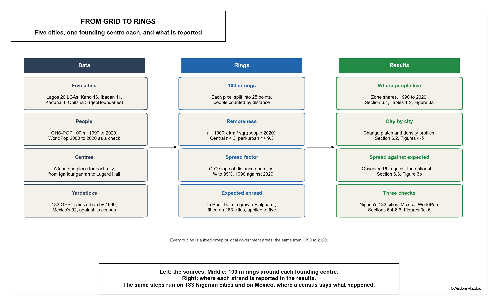
6. Results
6.1 The five together
The central zones of the five cities held 35.8% of their people in 1990 and 33.9% in 2020 (Table 1). They gained 4.2 million people, the same number as the distant zones, and took 32% of all the growth. The intermediate zone held its share. The peri-urban zone gained less than a point.
Table 1. Share of people in each zone, five cities together, GHS-POP (%)
| Zone | 1990 | 2000 | 2010 | 2020 | Change in people, 1990 to 2020 |
|---|---|---|---|---|---|
| Central | 35.8 | 35.3 | 34.2 | 33.9 | +4.18 M |
| Intermediate | 23.5 | 23.7 | 23.9 | 23.6 | +3.10 M |
| Distant | 30.2 | 30.7 | 31.3 | 31.1 | +4.18 M |
| Peri-urban | 10.6 | 10.3 | 10.7 | 11.3 | +1.56 M |
That is a small shift for thirty years in which the five cities doubled. In the 183-city national panel on the same grid, the central share fell by more than 9 points over the same years, and the central zones took one person in five of the growth (Section 6.4).
6.2 City by city
The five do not move together (Table 2, Figure 3a). Kano, Ibadan and Kaduna lost between 4.5 and 5.7 points of central share. Lagos held to within a quarter of a point. Onitsha’s central share rose by 2.5. No city’s central zone lost people.
Table 2. The five cities, GHS-POP, 1990 to 2020
| City | LGAs | Area (km²) | People 1990 | People 2020 | Central zone reaches | Central share | Growth at the centre | φ (expected) |
|---|---|---|---|---|---|---|---|---|
| Lagos | 20 | 3,576 | 5.82 M | 11.31 M | 10.1 km | 25.8% to 25.6% | 25% | 1.01 (1.20) |
| Kano | 16 | 3,249 | 2.88 M | 6.22 M | 7.5 km | 55.3% to 49.6% | 45% | 1.05 (1.19) |
| Ibadan | 11 | 2,893 | 1.68 M | 3.69 M | 5.8 km | 49.5% to 45.0% | 41% | 1.08 (1.19) |
| Kaduna | 4 | 7,854 | 1.08 M | 2.09 M | 4.3 km | 27.6% to 22.4% | 17% | 1.02 (1.20) |
| Onitsha | 5 | 814 | 0.89 M | 2.05 M | 4.3 km | 21.4% to 23.9% | 26% | 0.95 (1.19) |
Growth at the centre is the central zone’s share of the people the city added between 1990 and 2020.
Figure 3 is three questions, one per panel. (a) For each city, the top bar is 1990 and the bottom bar is 2020. The dark slate on the left is the central zone: how much of the city lived near the founding place. Read across a pair of bars to see whether that dark block shrank, held, or grew. (b) The filled dot is what the city actually did: a spread factor above 1 means the typical resident ended farther from the centre; below 1, closer in. The open circle is what a city of the same growth would do if it behaved like the rest of urban Nigeria. Every filled dot sits left of its open circle: less outward shift than expected. (c) The same change in central share, 2000 to 2020, on two grids. Circles are GHS-POP; squares are WorldPop. When they sit on the same side of zero, the grids agree on the direction.
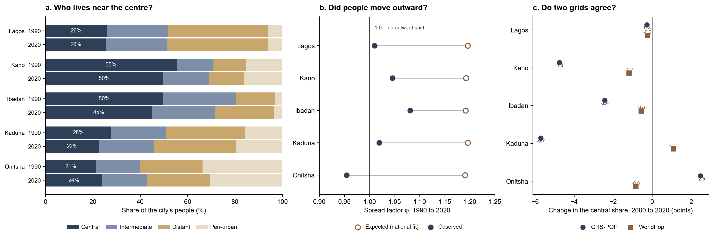
Lagos nearly doubled, and its central zone nearly doubled with it, from 1.50 to 2.89 million. The zone is wide: 10.1 kilometres from Lagos Island takes in Ikoyi, Apapa, Ajegunle, Surulere, Lagos Mainland and the southern edge of Mushin. Figure 5a shows where the people went. The deep red is not on the island. It is Ajeromi/Ifelodun inside the central circle, and the mainland belt through Mushin, Oshodi/Isolo, Agege and Ifako/Ijaye in the intermediate and distant zones. Lagos Island and Ikoyi are pale: GHS-POP gave them few new people, and took almost none away. Ikorodu, across the lagoon, carries blue patches of modelled loss on ground that surely built up. Lagos’s density profile (Figure 4) dips just past the island, where the ring is lagoon, and peaks again about six kilometres out on the mainland.
Kano still keeps half its people within 7.5 kilometres of Gidan Rumfa, the most central of the five by far. Its 2020 density near the palace is over 400 people per hectare, twice that of any other city here, and it falls almost to nothing by 12 kilometres (Figure 4). Of the 3.3 million people Kano added, 45% went into the central zone. Figure 5b shows the walled city and its western and southern edges in deep red, through Dala, Gwale, Kano Municipal and into Kumbotso and Ungogo. There are blue patches by Gwale and on the Kumbotso side, where the model moved people out. The sixteen LGAs reach far beyond the city: the outer eight are scattered villages, and they gained little.
Ibadan has the clearest stretch of the five, φ = 1.08: its people lived 8% farther from Mapo Hill in 2020 than in 1990, in proportion. That is still less than half the 19% the national fit expects. The share in the distant zone rose from 16% to 25%, along the roads to Akinyele, Egbeda and Ido. Figure 5c shows gains packed into Ibadan North and Ibadan North East, inside the central circle, and a long straight-edged blue band to the south-east, which Section 8 returns to.
Kaduna lost 5.2 points of central share and put the smallest part of its growth at the centre, 17%. The central circle around Lugard Hall covers the government district and the old residential quarters on both banks of the river. Figure 5d shows it patched with blue and pale gains, while the deep red sits outside it: west in Igabi, where Rigasa grew, and south across the river in Chikun, towards Narayi and Sabon Tasha. The peri-urban share rose from 16% to 20%. Kaduna is the city of the five that looks most like the anchor’s spreading Mexican city, and even so its φ, 1.02, is far below the expected 1.20.
Onitsha went the other way. Its central share rose from 21.4% to 23.9%, almost all of it between 2010 and 2020, and its φ is 0.95: the typical resident lived 5% closer to Ime-Obi Ogboza in 2020 than in 1990. Figure 5e shows the heaviest gains in a dark band along the southern side of Onitsha South, towards Fegge and the Ogbaru boundary, inside the central and intermediate circles. Ogbaru’s long southern arm gained a scatter of new settlement, and its share of the city fell. Onitsha’s density profile (Figure 4) is a flat plateau of about 90 people per hectare across the first four kilometres, then drops.
Figure 4 is a density walk out from the founding place. The horizontal axis is kilometres from the centre. The vertical axis is people per hectare in that ring. Sand is 1990; slate is 2020. If the slate line sits above the sand line near zero, the core densified. The green shaded band is that city’s central zone (wider in Lagos than in Onitsha because the zone is scaled to city size). The green vertical lines mark the intermediate and distant edges. Lagos dips just past the island because those rings are mostly lagoon.
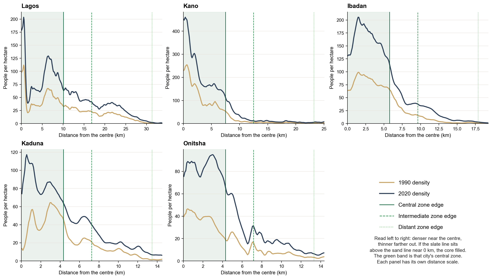
6.3 Spread against what was expected
Every one of the five spread less than its growth predicts (Figure 3b). The national fit expects a city that roughly doubled between 1990 and 2020 to end with its typical resident about 19% to 20% farther from the centre. Ibadan reached 8%. Kano reached 5%. Kaduna and Lagos reached 2% and 1%. Onitsha pulled in by 5%.
The gap is not small, and it runs the same way in every city. It is also on the same grid, with the same rings and the same arithmetic as the yardstick, so whatever GHS-POP gets wrong about Nigerian cities in general it gets wrong on both sides of the comparison. Cut to 2000 to 2020, the order is the same: φ is between 0.96 and 1.08 against an expected 1.14.
6.4 Against the rest of urban Nigeria
The national panel says the same thing in shares. Across the 183 GHSL urban centres that were urban by 1990, the central share fell from 39.1% to 29.9% between 1990 and 2020, and it fell in 177 of them. The median fall was 13 points in cities under a million people. In the fourteen cities over a million it was 3.7 points. The five largest cities, drawn by their LGAs, fell by 1.9 points together. Size is the dividing line. The towns spread; the big cities filled in.
6.5 The Mexican test
The anchor counted a loss of 2.5 million residents in Mexico’s central zones. GHS-POP, through the same steps, finds a gain of 1.9 million (Table 3, Figure 6a). Only two of 92 Mexican cities lose central population on the grid: Mexico City (6.09 million to 5.86 million) and Guadalajara (1.03 million to 0.95 million).
The share behaves better. The census says Mexico’s central share fell from over 40% to 22%. GHS-POP puts it at 26.4% in 1990 and 22.4% in 2020 (Figure 6b). The end point is right. The start is too low: GHS-POP’s 1990 Mexico is already spread out, and the fall from it is too small.
So the grid can be trusted for the direction of the share and not for the count. A fall in the share on GHS-POP is, if anything, smaller than the true fall. That applies to Kano, Ibadan and Kaduna, whose real falls may be larger than reported here, and it applies to the national panel too. The comparison in Section 6.3 holds because both sides of it carry the same bias. The 4.2 million people added to the five central zones could be fewer on the ground, or a loss.
Table 3. The grid against the census, and the five cities beside it
| Central change | Central share | Cities where the share fell | Centres that lost people | |
|---|---|---|---|---|
| Mexico, census, 1990 to 2020 (anchor) | −2.5 M | over 40% to 22% | not reported | most large cities |
| Mexico, GHS-POP, 1990 to 2020 | +1.91 M | 26.4% to 22.4% | 88 of 92 | 2 of 92 |
| Nigeria, 183 cities, GHS-POP, 1990 to 2020 | +9.74 M | 39.1% to 29.9% | 177 of 183 | 19 of 183 |
| Five cities, GHS-POP, 1990 to 2020 | +4.18 M | 35.8% to 33.9% | 4 of 5 | 0 of 5 |
| Five cities, WorldPop, 2000 to 2020 | +4.70 M | 35.9% to 35.7% | 4 of 5 | 0 of 5 |
Figure 6 asks whether the grid can be trusted when the true answer is known. (a) is a headcount test. The hatched bar is Mexico’s census: centres lost 2.5 million people. The next clay bar is the same Mexican cities on GHS-POP: the grid turns that loss into a gain. The slate bars are Nigeria on the same method. If the grid misses Mexico’s loss, do not treat Nigeria’s central headcount as a census. (b) is a share test. Every line is the percentage of people in central zones. The dashed clay line is Mexico’s census (it falls hard). The solid clay line is Mexico on GHS-POP (it falls too, but from a lower start). Slate lines are Nigeria. A falling share is the claim this paper can carry; the absolute count is not.
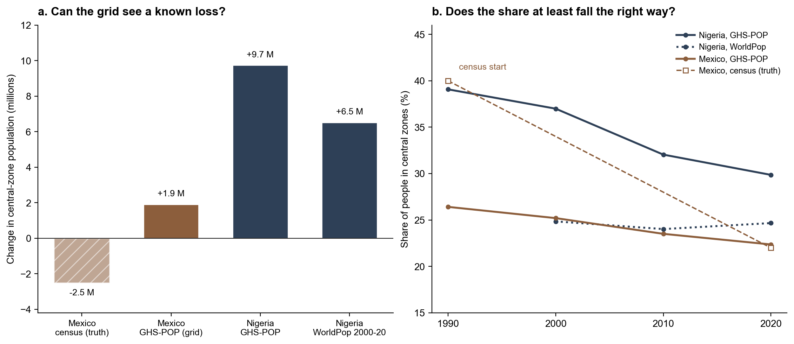
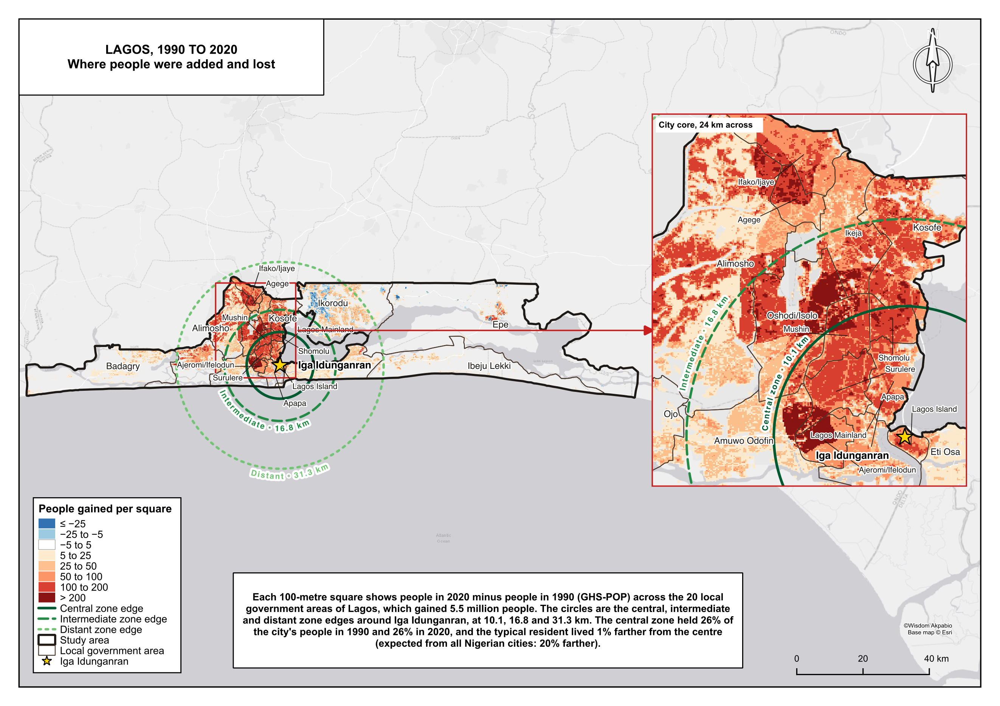
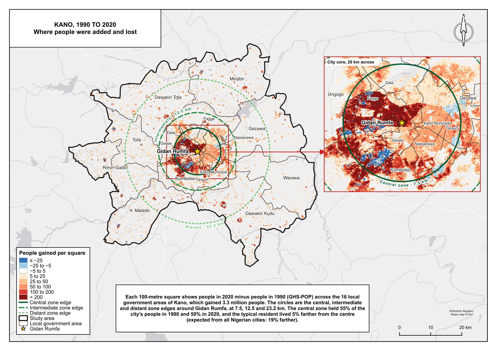
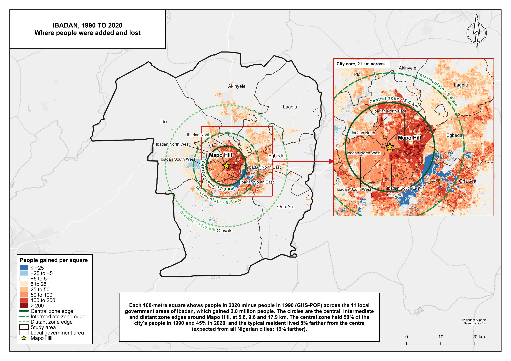
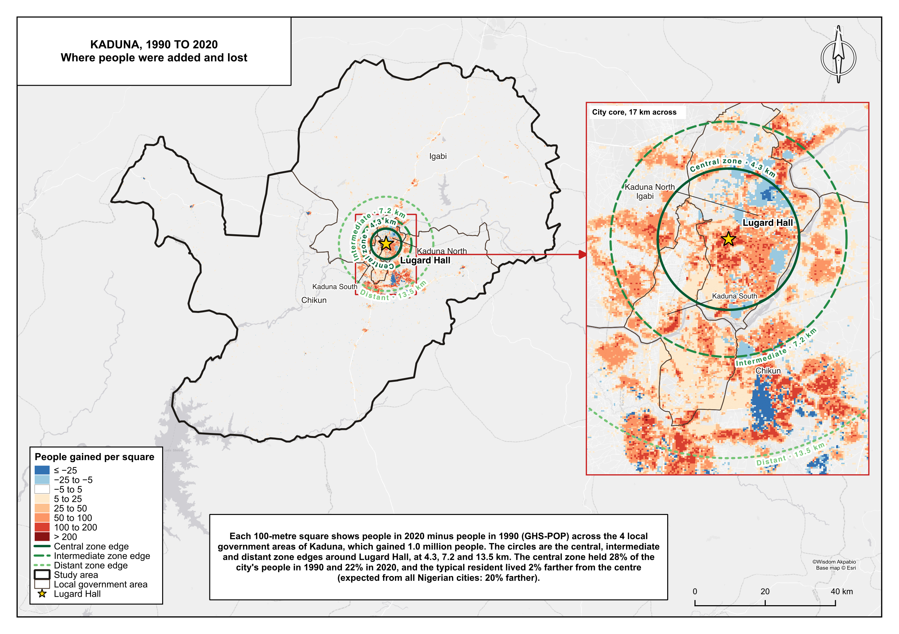
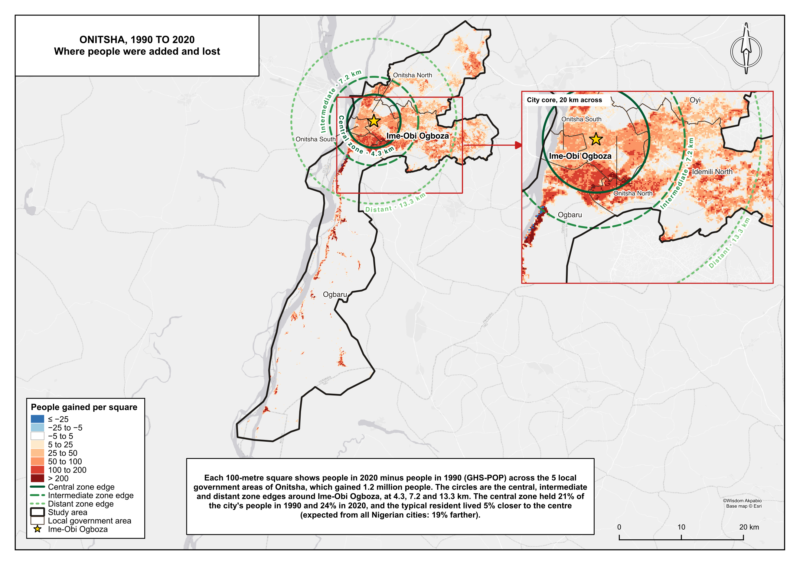
6.6 A second grid
WorldPop, from 2000 to 2020, agrees with GHS-POP in Lagos, Kano and Ibadan on the direction of the change in central share, and disagrees in Kaduna and Onitsha (Figure 3c, Table 4). In Kano and Ibadan, WorldPop’s fall is a quarter of GHS-POP’s. Its φ for the five cities lies between 0.99 and 1.02, and its national fit expects 1.00 to 1.01: WorldPop’s map of each city barely changes shape between 2000 and 2020, as if one pattern were scaled up to each year’s total.
Table 4. Change in the central share, 2000 to 2020, on the two grids (points)
| City | GHS-POP | WorldPop | Central share in 2020, GHS-POP / WorldPop |
|---|---|---|---|
| Lagos | −0.3 | −0.2 | 25.6% / 29.9% |
| Kano | −4.8 | −1.2 | 49.6% / 50.3% |
| Ibadan | −2.4 | −0.6 | 45.0% / 47.9% |
| Kaduna | −5.7 | +1.1 | 22.4% / 22.9% |
| Onitsha | +2.5 | −0.8 | 23.9% / 12.2% |
That makes WorldPop a weak check on spread, in either direction. It does confirm the levels in Kano, Ibadan and Kaduna, where the two grids put the same share of people at the centre in 2020. It does not confirm Onitsha’s: WorldPop puts half as many of Onitsha’s people in the central zone and more of them in the distant and peri-urban zones. Onitsha’s gain in central share rests on GHS-POP alone.
7. Discussion
The Mexican paper found a doughnut: a centre that lost people while the ring around it filled. This paper cannot find or rule out a Nigerian doughnut, and it says so plainly. What it does find is that Nigeria’s largest cities kept their centres far better than the country’s smaller towns. On the same grid, with the same rings, the five spread between less than half and a twentieth as much as a typical older Nigerian city of the same growth, and Onitsha did not spread at all.
There are two plain reasons, and the plates show both. The first is arithmetic. A zone that scales with the square root of population gives Lagos a central circle of 10 kilometres and Kano one of 7.5, which takes in ground that was suburb or farmland in 1990 and is city now. Part of what looks like the centre holding is the centre being drawn wide enough to catch the growth. The second is how big Nigerian cities grow. They fill in before they spread out: storeys go up on old compounds, every gap on the Lagos mainland is built, and the family houses in Kano’s walls and on the hills around Mapo take more people, not fewer. Kano’s 400 people per hectare near the palace is the clearest sign of it.
Kaduna is the exception in the opposite direction, and its plate explains why. It is a planned colonial city whose centre is a government district, not an old residential core. The places that grew, Rigasa and Narayi and Sabon Tasha, were villages and estates on the edge in 1990. Kaduna’s centre held less because it was never where most people lived. Onitsha shows the reverse: a river market that pulls people towards it, with the city boxed in by the Niger on one side and by its neighbouring towns on the others, so that the densest new building is close to the market rather than far from it.
The absolute numbers are another matter. A gain of 4.2 million people in five central zones would, if true, mean that the old cores of Nigeria’s largest cities became much denser while Mexico’s emptied. Some of it is probably true; Nigeria’s natural growth is far higher than Mexico’s was. But the grid that says so turned Mexico’s emptying cores into filling ones, and in Onitsha the second grid does not agree. The honest reading is that the count cannot be known from these sources, while the comparison between cities can.
8. Limitations
No census to check against. Nigeria’s censuses were in 1991 and 2006. The one planned for 2023 was postponed. GHS-POP and WorldPop are both built on projected totals for LGAs, and the pattern inside each LGA is the model’s. There is no Nigerian equivalent of the Mexican block count.
Built volume is not residence. GHS-POP spreads people over built-up volume. Lagos Island’s markets, Kano’s Kurmi market, Dugbe in Ibadan and Onitsha’s Main Market are dense buildings with few residents at night. The grid keeps people in them. That is the likely reason it misses central loss in Mexico, and it would hide the same in these five centres.
Lagos stops at the state line. Lagos’s northern suburbs in Ogun State, at Ota, Ifo, Akute and Mowe, are some of the fastest-growing ground in the region and are outside the outline. Their absence lowers Lagos’s outer zones and makes its centre look steadier than a metropolitan outline would.
Kaduna’s outline is mostly farmland. Chikun and Igabi take Kaduna to 7,854 square kilometres, more than twice the area of Lagos. The zones scale with population, not area, so the empty land mostly falls beyond the distant edge, but the peri-urban share includes villages that are not Kaduna in any sense a resident would use.
Onitsha is cut at the river and the LGA line. Asaba, across the Niger, is outside. So is the settlement that runs on from Idemili North into Idemili South and towards Nnewi, which is continuous with the city on the ground. Ogbaru’s southern arm, inside the outline, is mostly creek and farmland. Onitsha’s outline is the smallest of the five, and the most arbitrary.
Ibadan’s south-eastern band. A long, straight-edged band of losses runs south-east of Mapo Hill, across the edge of Ibadan South East into Ona Ara and Oluyole. No account of the city we know of explains it. It is the clearest sign on any plate that the model can move people between epochs for reasons of its own, and it sits partly inside the central and intermediate zones.
Water in the rings. The central zones of Lagos and Onitsha are partly lagoon, sea and river. Ring areas include the water, as in the anchor, so their density levels are low; changes are unaffected.
Model losses on growing ground. The blue patches at Ikorodu, in Kano’s Gwale and Kumbotso, and in Chikun are losses in the model, not observations. A 100 metre change on GHS-POP is a sign of where the model moved people between epochs, not proof that they moved.
9. Policy
National Population Commission. When the next census is held, publish counts by enumeration area with boundaries, and a crosswalk to 1991 and 2006, for the central LGAs of these five cities: Lagos Island, Lagos Mainland and Ajeromi/Ifelodun; Kano Municipal, Dala and Gwale; Ibadan North, Ibadan North East and Ibadan South East; Kaduna North and Kaduna South; and Onitsha North and Onitsha South. Those few tables would let the Mexican count run in Nigeria’s largest cities and settle the question this paper cannot.
Lagos State Ministry of Physical Planning and Urban Development. Most of Lagos’s growth since 1990 went into the mainland belt of Ajeromi/Ifelodun, Mushin, Oshodi/Isolo, Agege and Ifako/Ijaye, not to the Lekki corridor or Ikorodu. Drainage, sanitation and bus capacity in those LGAs are where the people are. Plan the metropolitan outline with Ogun State, because the edge of Lagos is at Ota and Mowe, not at the state line.
Kano State Urban Planning and Development Authority. Nearly half of Kano’s added people went within 7.5 kilometres of Gidan Rumfa, into some of the densest ground in the country. Water, sanitation and fire access in Dala, Gwale and Kano Municipal matter more to more people than new estates on the edge. Do not use a satellite grid to decide whether the walled city is filling or emptying: commission a household count first.
Oyo State Ministry of Lands, Housing and Physical Planning, and the Ibadan LGAs. Ibadan is the one city of the five spreading along its roads, to Akinyele, Egbeda and Ido. Schools and clinics placed for the old city will sit where a falling share of Ibadan lives. Check the south-eastern band on the ground before any plan for Ona Ara and Oluyole leans on it.
Kaduna State Urban Planning and Development Authority. Kaduna’s growth went to Rigasa in Igabi and to Narayi and Sabon Tasha in Chikun. The government district around Lugard Hall took little. Roads, water and secondary schools for the next decade belong in those two LGAs, with crossings over the Kaduna River between them and the city centre.
Anambra State Physical Planning Board and the Onitsha LGAs. Onitsha’s growth has stayed close to the market and the waterfront, in Onitsha South and its edge with Ogbaru, much of it low and flood-prone. Plan with Delta State for Asaba and with Idemili South and Nnewi North for the continuous settlement beyond the LGA line, since that is where a city boxed in by the river will go next.
Researchers using global grids. Report the share by zone, and compare cities on the same grid, which survive the Mexican test. Do not read an absolute gain at the centre as densification, and do not compare β or α across countries on GHS-POP or WorldPop.
10. Conclusions
Did the centres of Nigeria’s largest cities hold less of their people in 2020 than in 1990? A little, and not everywhere. Together the five central zones went from 35.8% to 33.9% of their cities’ people. Kano, Ibadan and Kaduna lost about five points each. Lagos held to within a quarter of a point. Onitsha’s centre gained share. On a grid that the Mexican test says understates such falls, the true losses in Kano, Ibadan and Kaduna are probably larger.
Did they spread outward as much as the rest of urban Nigeria says a city of their growth should? No. The national fit expects the typical resident to end about 19% farther from the centre. The five ended between 5% closer and 8% farther. That is the strongest finding in the paper, because both sides of the comparison sit on the same grid. Nigeria’s smaller towns spread; its largest cities filled in. Kano’s walled city, Ibadan’s hills and the Lagos mainland took a large part of the growth that came to them.
Did the centres lose people, as in Mexico? That cannot be answered from these sources. The same grid that adds 4.2 million people to these five centres adds 1.9 million to Mexico’s, where the census counted 2.5 million fewer. The second grid hardly changes its shape, and it disagrees with the first in Kaduna and Onitsha.
So the defensible claim is about where growth went, relative to other Nigerian cities, not about who left. In Nigeria’s largest cities the centre has held better than anywhere else in the country’s urban system. What happened inside those centres, on Lagos Island, inside Kano’s walls, under Mapo Hill, around Lugard Hall and above Onitsha’s waterfront, still needs a count of people, house by house.
Data availability
The write-up, the tables, the figures and the code are in this repository. GHSL, WorldPop, geoBoundaries, Natural Earth and OpenStreetMap keep their own licences. Rasters and geopackages are not committed; src/download_ghsl.py fetches the grids again and src/lga_cities.py rebuilds the outlines.
| Write-up | notes/results.md, notes/brief.md, notes/metric_trace.md |
| Tables | data/processed/named_cities_lga*.csv, zone_people_lga*.csv, summary_lga*.csv, expansion_factors_lga*.csv; yardsticks in summary.csv, summary_mx.csv, share_by_size.csv |
| Rings | data/processed/rings_lga.csv.gz, rings_lga_worldpop.csv.gz, rings.csv.gz, rings_mx.csv.gz |
| Maps | maps/{city}_study_area.png, maps/{city}_results.png |
| Charts | charts/method_flowchart.png, city_results.png, city_profiles.png, tests.png |
| Code | src/lga_cities.py, src/download_ghsl.py, src/radial.py, src/analyse.py, src/charts.py, src/flowchart.py, src/plate_data.py, qgis/urban_spread_method.py (Processing script of the full method), qgis/study_area_plate.py, qgis/build_plates.py |
References
Achebe, C., 1958. Things Fall Apart. Heinemann, London.
Angel, S., Parent, J., Civco, D.L., Blei, A., Potere, D., 2011. The dimensions of global urban expansion: estimates and projections for all countries, 2000–2050. Progress in Planning 75, 53–107. https://doi.org/10.1016/j.progress.2011.04.001
Bettencourt, L.M.A., 2013. The origins of scaling in cities. Science 340, 1438–1441. https://doi.org/10.1126/science.1235823
Clark, C., 1951. Urban population densities. Journal of the Royal Statistical Society, Series A 114, 490–496. https://doi.org/10.2307/2981088
European Commission, Joint Research Centre, 2024. GHS Urban Centre Database R2024A, version 1.2. Global Human Settlement Layer. https://human-settlement.emergency.copernicus.eu/
National Population Commission, 2006. Population and Housing Census of the Federal Republic of Nigeria. NPC, Abuja.
Peraza-Mues, G., Resendiz, R., Figueroa-Soriano, J., Prieto-Curiel, R., Ponce-Lopez, R., 2025. Scaling and population loss in Mexican urban centres. arXiv:2509.16110. https://arxiv.org/abs/2509.16110
Pesaresi, M., Politis, P., 2023. GHS-BUILT-S R2023A: GHS built-up surface grid, derived from Sentinel-2 composite and Landsat, multitemporal (1975–2030). European Commission, Joint Research Centre.
Runfola, D., Anderson, A., Baier, H., Crittenden, M., Dowker, E., Fuhrig, S., et al., 2020. geoBoundaries: a global database of political administrative boundaries. PLoS ONE 15, e0231866. https://doi.org/10.1371/journal.pone.0231866
Schiavina, M., Freire, S., Carioli, A., MacManus, K., 2023. GHS-POP R2023A: GHS population grid multitemporal (1975–2030). European Commission, Joint Research Centre.
Stevens, F.R., Gaughan, A.E., Linard, C., Tatem, A.J., 2015. Disaggregating census data for population mapping using random forests with remotely-sensed and ancillary data. PLoS ONE 10, e0107042. https://doi.org/10.1371/journal.pone.0107042
Tatem, A.J., 2017. WorldPop, open data for spatial demography. Scientific Data 4, 170004. https://doi.org/10.1038/sdata.2017.4
UN-Habitat, 2009. Structure Plan for Onitsha and Satellite Towns. United Nations Human Settlements Programme and Anambra State Government, Nairobi.
Yeats, W.B., 1920. The second coming. The Dial 69, 466.